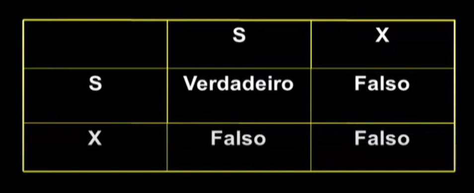
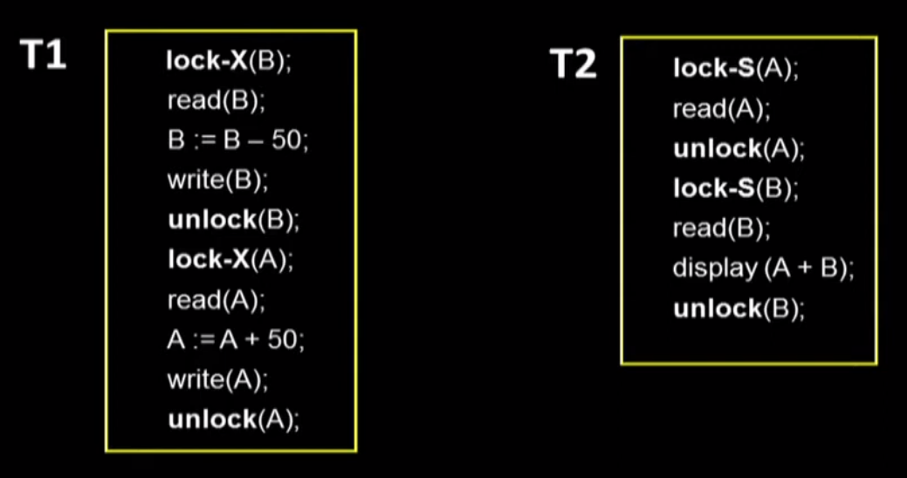
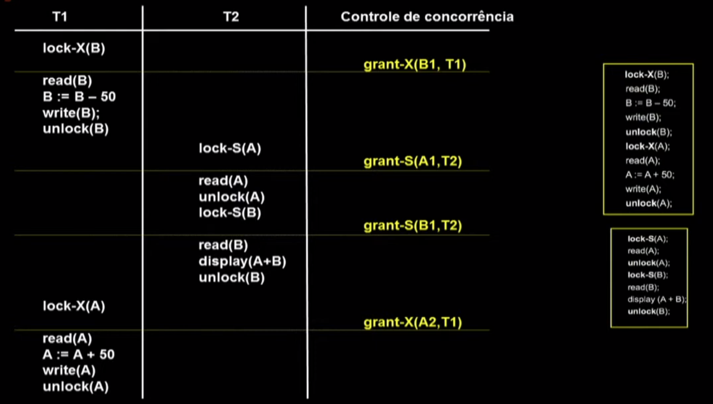
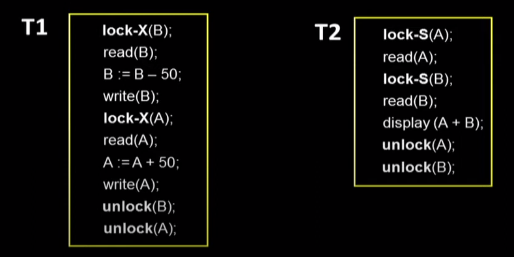
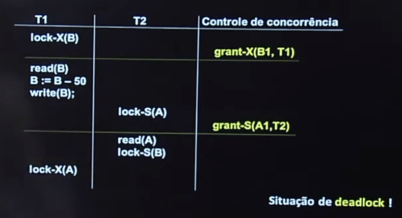
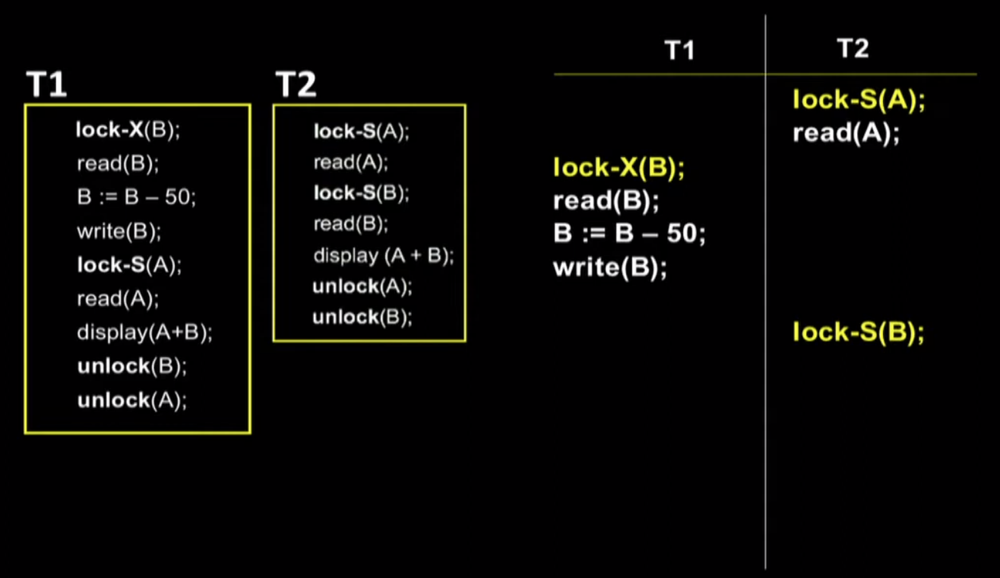
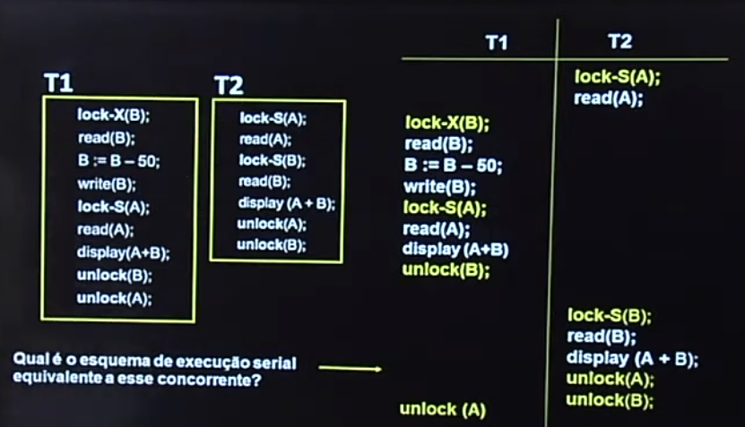

Disciplinas
-
BANCO DE DADOS-T01-2024-1 Concluído
Materiais
Vídeo 2 - Bancos de Dados - Aula 25 - Controle de concorrência – Parte I. sendProfessor ministrante: Sarajane Marques Peres.
Conteúdo
Controle de concorrência.
Controle de concorrência.
O ISOLAMENTO é uma das propriedades fundamentais de uma transação.
- Quando diversas transações são executadas de modo concorrente, há o risco de ocorrer violação dessa propriedade.
- É necessário que o sistema controle a forma como as operações das transações são intercaladas durante a execução concorrente. Esse controle é realizado pelo módulo de controle de concorrência.
- Os esquemas de controle de concorrência tem por base a propriedade de serialização. Ou seja, os esquemas devem garantir que a ordenação da execução das operações das diferentes transações concorrentes seja serializável.
Protocolo de controle de concorrência baseado em bloqueio.
- Uma das formas de garantir que apenas esquemas de execução concorrente serializáveis sejam produzidos é obrigar que o acesso aos itens de dados seja feito de maneira mutuamente exclusiva:
- enquanto uma transação acessa um item de dados, nenhuma outra transação pode modificá-lo.
- Para implementar esse controle, pode-se usar o método do bloqueio (lock):
- a forma como os bloqueios são usados influencia no resultado referente à geração de um esquema de execução concorrente serializável ou não.
Tipos de bloqueios (ou travas).
- Bloqueio compartilhado: se uma transação Ti obteve um bloqueio compartilhado (S) sobre um item de dado Q, então Ti pode ler Q mas não pode escrever em Q.
- Bloqueio exclusivo: Se uma transação Ti obteve um bloqueio exclusivo (X) sobre o item de dados Q, então Ti pode tanto ler Q quanto escrever em Q.
A transação solicita (procedimento implementado pelo SGBD) o bloqueio apropriado antes de executar qualquer operação sobre Q. O controle de concorrência decide se concede ou não o bloqueio solicitado.
Compatibilidade entre bloqueios:  Exemplo de transações com os bloqueios concedidos:  Exemplo de transações concorrentes: O esquema de execução concorrente resultante é serializável????
Exemplo de transações com todos os desbloqueios no final .....  Exemplo de transações concorrentes: - É necessário estabelecer um protocolo de bloqueio de forma que cada transação (ou a concessão do bloqueio) siga um determinado (e o mesmo) conjunto de regras.
- o protocolo estabelece quando uma transação pode ou não receber o direito de bloquear ou desbloquear cada item de dados.
- As regras dizem respeito a:
- quando uma transação pode solicitar um bloqueio
- quando uma transação pode liberar um bloqueio
Protocolo de bloqueio em duas fases (Two-phase locking protocol).
- FASE DE EXPANSÃO: uma transação pode obter bloqueios, mas não pode liberar nenhum.
- FASE DE ENCOLHIMENTO: uma transação pode liberar bloqueios, mas não consegue obter nenhum bloqueio novo.
- Esse protocolo garante apenas a geração de esquemas de execução concorrente serializáveis. Ele não garante ausência de deadlocks.
Exemplo:
 Qual é o esquema de execução serial equivalente a esse concorrente?
Outros esquemas de controle de concorrência:
- Protocolo de bloqueio em duas fases SEVERO.
- Protocolo de bloqueio em duas fases RIGOROSO.
- Protocolo de bloqueio com upgrade e downgrade.
- Protocolo de bloqueio de granularidade múltipla.
- Protocolo de bloqueio baseado em timestamp.
- Esquema de multiversão.
Observações.
Os SGBDs que possuem o controlador de concorrência baseado em bloqueios possuem um mecanismo automático de concessão de bloqueios para as transações.
Os SGBDs permitem que bloqueios explícitos sejam colocados na codificação da transação (pelo programador). Esses bloqueios, geralmente, sobrepõem o mecanismo automático.
Controle de concorrência - Parte l.
Estes slides estão baseados na bibliografia:
- Elmasri, Ramez; Navathe, Shamkant B. Sistemas de Banco de Dados. Pearson, 6a edição, 808p., 2011.